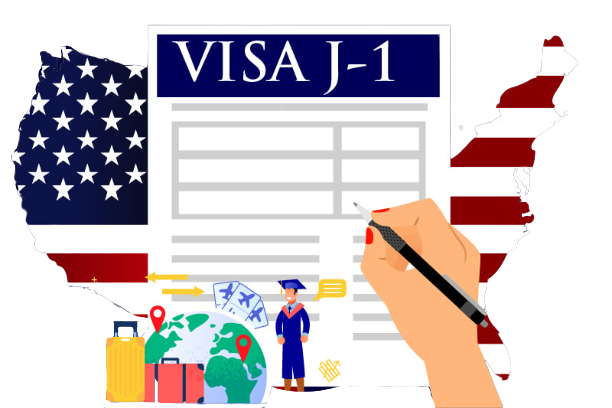

¿Qué es un Work and Travel?
Muchos de nosotros en algún momento de nuestra vida soñamos con un viaje al exterior, y Estados Unidos es uno de los países que te ayuda a que lo cumplas. Se trata de un programa de intercambio cultural para estudiantes regular de nivel terciario y universitario. Los estudiantes podrán viajar al país mencionado a vivir y trabajar por un máximo de 3/4 meses, experimentar la cultura americana, mejorar el nivel de inglés, hacer amigos internacionales y obtener experiencia laboral.
Si no vas, nunca lo sabrás!
¿Te gusta el frío?
La mayoría de los Argentinos deciden hacer el programa en el receso de verano (Diciembre-Marzo) que es cuando los estudiantes tienen mayor tiempo vacacional. En Estados Unidos es invierno y por lo general los trabajos disponibles se relacionan a la temporada, esto dependerá del Estado en donde desees aplicar y la variedad de oferta que tenga la agencia de work and travel (W&T) elegida.
Los puestos de trabajo más comunes suelen estar relacionados con centros de esquí, gastronomía y hotelería.
Requisitos para aplicar al programa
EDAD ENTRE 18 y 28/29 AÑOS
Costos
Las agencias de Work and Travel rondan un precio promedio de U$S 1900 y dependerá del tiempo anticipado en el que apliques al programa, es decir, cuanto antes empieces a pagar, menor va a ser el precio. Además te ofrecen métodos de pagos mensuales hasta mediados de agosto que es cuando comienza la feria de trabajo. Algo a destacar, es que este programa no incluye pasajes de avión así que deberás sumarle alrededor de U$S 1000 más. Aunque seguramente los asuste con el precio, quiero decirles que no es imposible, mente positiva y a ¡ahorrar! que los sueños están para cumplirse. Recuerden que este programa tiene una recompensa económica por trabajar, así que probablemente recuperen toda su inversión.

Este programa te da la oportunidad de obtener una Visa J1 para poder viajar y trabajar de manera legal en los EE.UU. Primero, tendrás que cumplir ciertos requerimientos, entre ellos nivel intermedio de inglés, ser estudiante universitario o terciario de condición regsular y tener un seguro médico estadounidense, además deberás presentarte a una entrevista personal en inglés en la Embajada de los Estados Unidos ubicada en Buenos Aires Capital. Pero ¡tranquilos!, para eso están las empresas patrocinadoras de tu visa, la cual se van a encargar de ayudarte en todo el proceso de preparación para tu viaje y nosotros tenemos toda la información para vos. [Ver más]